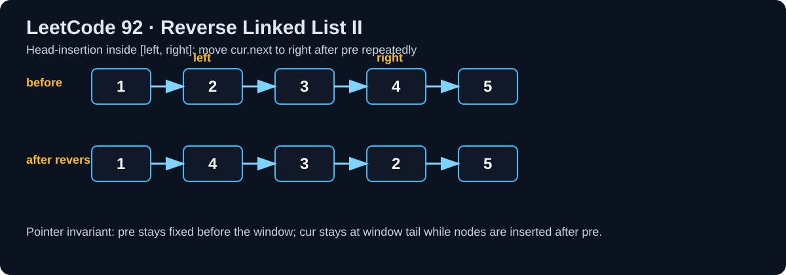

LeetCode 92: Reverse Linked List II (In-Place Head-Insertion)
LeetCode 92Linked ListIn-PlaceToday we solve LeetCode 92 - Reverse Linked List II.
Source: https://leetcode.com/problems/reverse-linked-list-ii/

English
Problem Summary
Given the head of a singly linked list and two positions left and right (1-indexed), reverse only the nodes from left to right, and return the new head.
Key Insight
Use a dummy node and perform repeated head-insertion within the target window. Keep a pointer pre to the node before left, and cur at the first node of the window. Each step extracts cur.next and inserts it right after pre.
Optimal Algorithm (Step-by-Step)
1) Create dummy -> head to simplify when left = 1.
2) Move pre to node before position left.
3) Set cur = pre.next.
4) Repeat right - left times: take nxt = cur.next, detach it, and insert after pre.
5) Return dummy.next.
Complexity Analysis
Time: O(n).
Space: O(1).
Common Pitfalls
- Forgetting dummy node when reversing from head.
- Breaking links in wrong order and losing sublist tail.
- Iterating wrong number of times (right-left, not right-left+1).
- Returning head instead of dummy.next.
Reference Implementations (Java / Go / C++ / Python / JavaScript)
/**
* Definition for singly-linked list.
* public class ListNode {
* int val;
* ListNode next;
* ListNode() {}
* ListNode(int val) { this.val = val; }
* ListNode(int val, ListNode next) { this.val = val; this.next = next; }
* }
*/
class Solution {
public ListNode reverseBetween(ListNode head, int left, int right) {
if (head == null || left == right) return head;
ListNode dummy = new ListNode(0, head);
ListNode pre = dummy;
for (int i = 1; i < left; i++) pre = pre.next;
ListNode cur = pre.next;
for (int i = 0; i < right - left; i++) {
ListNode nxt = cur.next;
cur.next = nxt.next;
nxt.next = pre.next;
pre.next = nxt;
}
return dummy.next;
}
}func reverseBetween(head *ListNode, left int, right int) *ListNode {
if head == nil || left == right {
return head
}
dummy := &ListNode{Val: 0, Next: head}
pre := dummy
for i := 1; i < left; i++ {
pre = pre.Next
}
cur := pre.Next
for i := 0; i < right-left; i++ {
nxt := cur.Next
cur.Next = nxt.Next
nxt.Next = pre.Next
pre.Next = nxt
}
return dummy.Next
}class Solution {
public:
ListNode* reverseBetween(ListNode* head, int left, int right) {
if (!head || left == right) return head;
ListNode dummy(0, head);
ListNode* pre = &dummy;
for (int i = 1; i < left; ++i) pre = pre->next;
ListNode* cur = pre->next;
for (int i = 0; i < right - left; ++i) {
ListNode* nxt = cur->next;
cur->next = nxt->next;
nxt->next = pre->next;
pre->next = nxt;
}
return dummy.next;
}
};class Solution:
def reverseBetween(self, head: Optional[ListNode], left: int, right: int) -> Optional[ListNode]:
if not head or left == right:
return head
dummy = ListNode(0, head)
pre = dummy
for _ in range(1, left):
pre = pre.next
cur = pre.next
for _ in range(right - left):
nxt = cur.next
cur.next = nxt.next
nxt.next = pre.next
pre.next = nxt
return dummy.nextvar reverseBetween = function(head, left, right) {
if (!head || left === right) return head;
const dummy = new ListNode(0, head);
let pre = dummy;
for (let i = 1; i < left; i++) {
pre = pre.next;
}
let cur = pre.next;
for (let i = 0; i < right - left; i++) {
const nxt = cur.next;
cur.next = nxt.next;
nxt.next = pre.next;
pre.next = nxt;
}
return dummy.next;
};中文
题目概述
给定单链表头节点 head 以及位置 left、right（从 1 开始），只反转区间 [left, right] 内的节点，返回新的头节点。
核心思路
使用虚拟头节点 + 区间内“头插法”。pre 指向反转区间前一个节点，cur 指向区间第一个节点。每次把 cur.next 抽出来，插到 pre 后面，重复即可完成局部反转。
最优算法（步骤）
1）构造 dummy -> head，统一处理 left = 1。
2）将 pre 移动到第 left-1 个节点。
3）令 cur = pre.next。
4）循环 right-left 次：取 nxt = cur.next，摘下并头插到 pre 后。
5）返回 dummy.next。
复杂度分析
时间复杂度：O(n)。
空间复杂度：O(1)。
常见陷阱
- 没有使用 dummy，导致从头部反转时处理复杂。
- 指针重连顺序错误，丢失后续链表。
- 循环次数写错（应为 right-left）。
- 最后返回了旧 head 而不是 dummy.next。
多语言参考实现（Java / Go / C++ / Python / JavaScript）
class Solution {
public ListNode reverseBetween(ListNode head, int left, int right) {
if (head == null || left == right) return head;
ListNode dummy = new ListNode(0, head);
ListNode pre = dummy;
for (int i = 1; i < left; i++) pre = pre.next;
ListNode cur = pre.next;
for (int i = 0; i < right - left; i++) {
ListNode nxt = cur.next;
cur.next = nxt.next;
nxt.next = pre.next;
pre.next = nxt;
}
return dummy.next;
}
}func reverseBetween(head *ListNode, left int, right int) *ListNode {
if head == nil || left == right {
return head
}
dummy := &ListNode{Val: 0, Next: head}
pre := dummy
for i := 1; i < left; i++ {
pre = pre.Next
}
cur := pre.Next
for i := 0; i < right-left; i++ {
nxt := cur.Next
cur.Next = nxt.Next
nxt.Next = pre.Next
pre.Next = nxt
}
return dummy.Next
}class Solution {
public:
ListNode* reverseBetween(ListNode* head, int left, int right) {
if (!head || left == right) return head;
ListNode dummy(0, head);
ListNode* pre = &dummy;
for (int i = 1; i < left; ++i) pre = pre->next;
ListNode* cur = pre->next;
for (int i = 0; i < right - left; ++i) {
ListNode* nxt = cur->next;
cur->next = nxt->next;
nxt->next = pre->next;
pre->next = nxt;
}
return dummy.next;
}
};class Solution:
def reverseBetween(self, head: Optional[ListNode], left: int, right: int) -> Optional[ListNode]:
if not head or left == right:
return head
dummy = ListNode(0, head)
pre = dummy
for _ in range(1, left):
pre = pre.next
cur = pre.next
for _ in range(right - left):
nxt = cur.next
cur.next = nxt.next
nxt.next = pre.next
pre.next = nxt
return dummy.nextvar reverseBetween = function(head, left, right) {
if (!head || left === right) return head;
const dummy = new ListNode(0, head);
let pre = dummy;
for (let i = 1; i < left; i++) {
pre = pre.next;
}
let cur = pre.next;
for (let i = 0; i < right - left; i++) {
const nxt = cur.next;
cur.next = nxt.next;
nxt.next = pre.next;
pre.next = nxt;
}
return dummy.next;
};
Comments